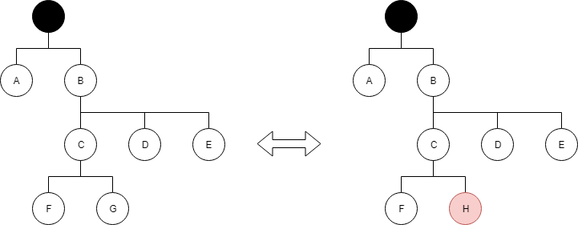

Immutability
An immutable object is an object whose state cannot be modified after it is created.
Problems with mutable state (1)
- Code is hard(er) to read and error prone
- Code is hard(er) to test and debug
Problems with mutable state (2)
- Tracking mutations in code is tiresome
- Tracking changes and unwanted side-effects in objects is difficult and very expensive
Tracking changes / mutations
Tracking changes / mutations
- don't track changes - live with side-effects
- self-made code / framework
-
Object.observe(obj, fn); - Immutability & Redux
- applicable ? maybe, maybe not
- error prone, maintenance overhead
- performance overhead, still much code
Problems with mutable state (3)
- It's most likely not concurrency safe
Concurrency
Basic aspects of concurrency
- Synchronicity / Asynchronicity
- Single / Multi Threading
Javascript is executed asynchronously,
but still in a single-thread
Synchronous + Single-Threaded

- Shared mutable state can be regarded to be safe
- Does not concern Javascript
Synchronous + Multi-Threaded

- Shared mutable state is regarded to be unsafe
- Does not concern Javascript either
Asynchronous + Multi-Threaded

- Shared mutable state is regarded to be unsafe
- Does not concern Javascript yet
(Multi-Threading will be supported through WebAssembly)
Asynchronous + Single-Threaded

- Asynchronicity is a kind of concurrency !
- Recall: Mutable state. It's most likely not concurrency safe !
- Shared mutable state in Javascript is unsafe
Trivial example
Sorting a list
let animals = [ 'hamster', 'cat', 'mouse', 'dog' ]; // shared
let sortedAnimals = animals.sort();
console.log(animals == [ 'hamster', 'cat', 'mouse', 'dog' ]); // false, why ?
console.log(animals === sortedAnimals); // true, why ?Not so trivial example
Event Listerns etc. triggered while modifying shared state
// some global state
let data = [ 1, 2, 3, 4 ];
let sum = 0; // shared
// callback-code of a listener
for (let index = 0; index < data.length; index++) {
sum += data[index];
}
console.log(sum === 10); // true, but always true ?Immutability in Javascript
- Primitive Values are immutable by default
- There is no modifier to "lock/freeze" objects
- Immutability is done by (shallow) copying objects
Wording
Use "value" instead of "object", because ...
- Object implies mutability
- Value implies immutability
Try to avoid using
array.slice()= wrong intentionfor-loop & hasOwnProperty()= error pronejQuery or any other library= probably not necessary
Objects - Object.assign()
let animal = {
name: "Homer",
age: 2,
type: "hamster",
legs: 4
};
let shallowCopy = Object.assign({}, animal);
console.log(animal === shallowCopy); // falseArrays - [].concat()
let animals = [ 'hamster', 'cat', 'mouse', 'dog' ];
let shallowCopy = [].concat(animals);
console.log(animals === shallowCopy); // falseObjects - Spread Operator
let animal = {
name: "Homer",
age: 2,
type: "hamster",
legs: 4
};
let shallowCopy = { ...animal };
console.log(animal === shallowCopy); // falseArrays - Spread Operator
let animals = [ 'hamster', 'cat', 'mouse', 'dog' ];
let shallowCopy = [ ...animals ];
console.log(animals === shallowCopy); // falseBe aware though
- Object.assign(), [].concat(), Spread Operator result each in a flat shallow copy
- Not suitable for more complex (deep) entities
- There is no deep shallow copy in Javascript yet
Wrap-Up: Immutability
- Very little code to write
- Very simple to use
Advantage
- Concurrency safe (multi-threading, asynchronicity, ...)
- No expensive synchronization between threads
- No expensive state tracking
Object.observe(obj, fn) - Better code quality
Disadvantage
- Performance overhead (object creation)
- Requires a lot of discipline (mutating state is so easy)
Conclusion
- Different, more functional-style application design
- You can assume everything immutable
- It's a very simple pattern !
Immutability
Immutable.js
Enable and simplify immutability in Javascript
Immutable.js - Basics
- Based on the native Javascript Array/Object API
- All implementations return shallow copies
- Utils for deep-copy, merge, compare, ...
Immutable.js - New Collections
- Set, OrderedSet
- Map, OrderedMap
- Seq(uence), Range, Repeat
- ...
Wrap-Up: Immutable.js
- Very low-level library (Array/Object)
- Native JS functions but without side-effects
- Convenient collections
- Very simple to use
Don't confuse/mix-up the APIs !
Immer.js
Simplify handling of immutable state
e.g. reducers/reductions in Redux
Immer.js
- "Enhancement" of Immutable.js
- Copy on write state (lazy & deeply)
- Tracking & applying changes
Wrap-Up: Immer.js
- High-level library (state)
- Less code
- Very simple to use
Be aware of the peculiarities !
Redux
Simplify handling of immutable state
in a structured & consistent way
Wrap-Up: Immutability
Immutable.js, Immer.js and Redux focus on different aspects of immutability
You can combine them !